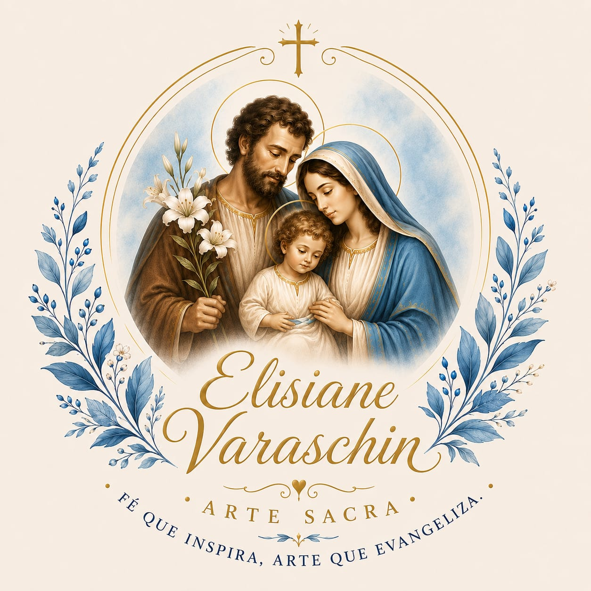

Cristo Crucificado
Recomposição da policromia e restauro estrutural da cruz, devolvendo delicadeza à expressão original.

Ateliê de restauro sacro
Preservando símbolos de fé com dedicação, respeito e sensibilidade.
Conheça os trabalhosSobre
Meu nome é Elisiane, e encontrei na restauração de imagens sacras a forma de unir minha fé, minha paixão pela arte e minha vocação.
Acredito que cada imagem religiosa carrega uma história, um significado e momentos de devoção que merecem ser preservados. Por isso, realizo cada restauração com dedicação, respeito à originalidade e muito carinho.
Mais do que recuperar uma peça, meu propósito é devolver vida a símbolos de fé que continuam inspirando famílias, igrejas e comunidades.
Elisiane Varaschin
Restaurações
Arraste o divisor para comparar o antes e o depois. Toque na imagem para ampliar.
Recomposição da policromia e restauro estrutural da cruz, devolvendo delicadeza à expressão original.
Limpeza profunda, reconstituição do manto e retoque de pintura, preservando a expressão sacra original.
Restauro de pintura e correção de fissuras, resgatando a suavidade da imagem original.
Tratamento de superfície, correção de rachaduras e revitalização da policromia original.
“Direi do Senhor: Ele é o meu Deus, o meu refúgio, a minha fortaleza, e nele confiarei.”
Salmos 90:2
Uma imagem sacra não é apenas uma peça de arte.
Ela acompanha orações, celebrações, promessas e momentos que fazem parte da história de uma família ou de uma comunidade.
Mesmo quando o tempo desgasta suas cores ou danifica seus detalhes, seu significado permanece intacto.
A restauração devolve a beleza, preserva a história e permite que esse símbolo de fé continue inspirando as próximas gerações.
Conheça um trabalho realizado com técnica, sensibilidade e profundo respeito por cada imagem e por tudo o que ela representa.
Contato